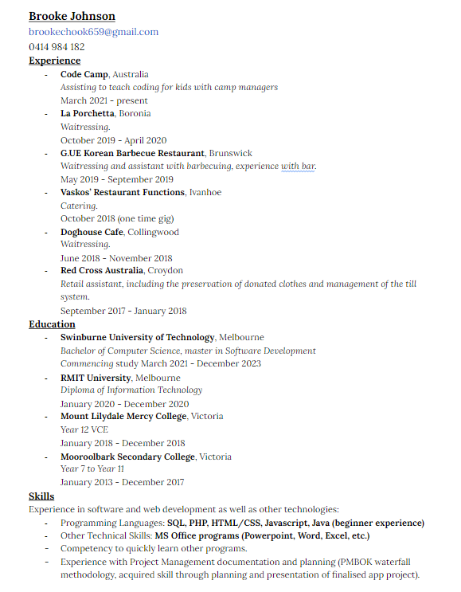

About
- Name:
- Brooke Johnson
- Student ID:
- s102968951
- Course:
- Bachelor of Computer Science
- Email:
- 102968951@student.swin.edu.au
Social Links:
- More About Myself:
- I'm currently in my first year of my Bachelor degree at Swinburne, expecting to graduate at the end of 2023. My major is in Software Development, but while I'm continuing study I hope to obtain a part time web developement job (front-end) by the end of 2021. Before I started studying at Swinburne, I previously graduated from a Diploma of Information Technology at RMIT Melbourne campus.
Resume
Details
Experience
- Code Camp Australia, Assisting to teach coding for kids with camp managers. March 2021 - present
- La Porchetta Boronia, Waitressing. October 2019 - September 2019
- Vaskos' Restaraunt Functions Ivanhoe, Catering. October 2018 (one time gig)
- Doghouse Cafe Collingwood, Waitressing. June 2018 - November 2018
- Red Cross Australia Croydon, Retail assistant including management of store and preservation of donated clothes. September 2017 - January 2018
Education
- Swinburne University of Technology Melbourne, Bachelor of Computer Science, mastering in Software Development. Commenced study March 2021 - estimated graduation December 2023
- RMIT University Melbourne, Diploma of Information Technology. January 2020 - December 2020
- Mount Lilydale Mercy College Victoria, Year 12 VCE. January 2018 - December 2018
- Mooroolbark Secondary College Victoria, Year 7 - Year 11. January 2013 - December 2017
Skills
- Programming/Scripting languages: HTML, CSS, SASS, Javascript, PHP, Java (for Android applications), SQL and Ruby.
- Experience using: Git, Github, Docker desktop, Wordpress, Slack and Microsoft programs (Word, Powerpoint, Excel).
- Familiar with relational database management systems (MySQL and Microsoft SQL Server).
Image:
 > click here to open a copy{kind=link}
Some Pictures of my Dog Layla
She is a three year-old Bull Terrier. I first got her in 2018, in my senior year of highschool. She enjoys carob chocolatte treats, squeaky toys and lots of belly rubs. Although she appears scary she is the most timid dog I've ever encountered. Her head resembles an egg and some people say she either looks like a horse, shark or pig.